Generated by generate_figures.py. For the integrated
documentation + figures page, open ../index.html.
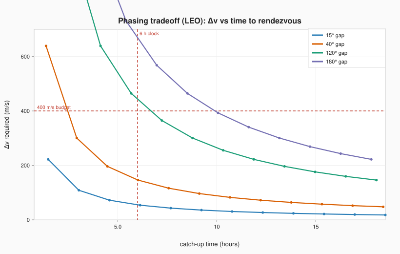
Co-orbital phasing: Δv vs catch-up time Closing a co-orbital gap is cheap if you can wait — Δv falls with every extra orbit. The 6 h suit-clock and a 400 m/s budget bound the feasible corner (lower-left).
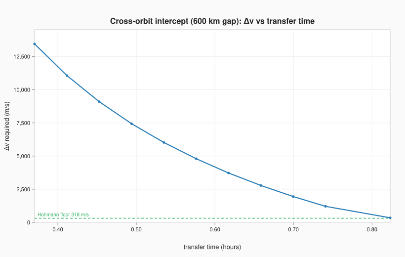
Cross-orbit intercept: the Δv floor & speed penalty A buoy on a different orbit (600 km higher) can't beat the Hohmann Δv floor, and arriving faster costs Δv steeply — a luxury rescue, hopeless on a short clock.
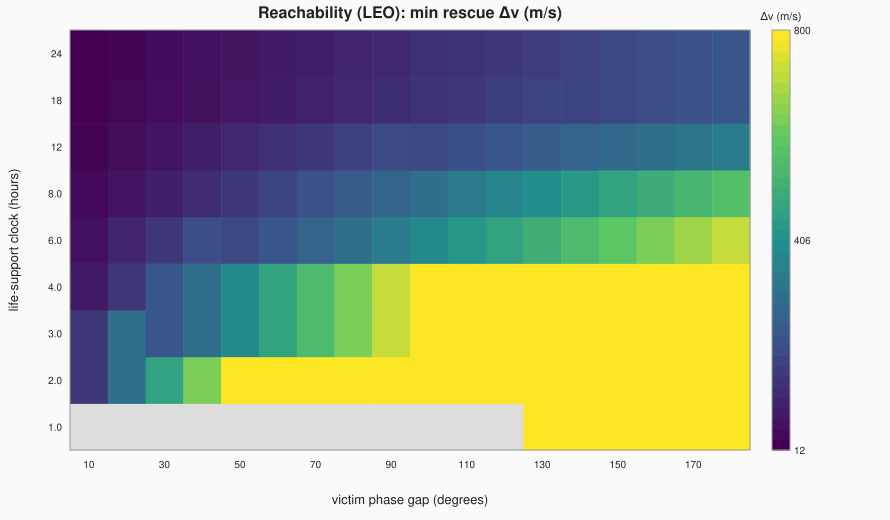
Reachability map: cheapest rescue Δv The coverage map. For each phase gap (x) and life-support clock (y), the cheapest co-orbital rescue Δv. Grey = unreachable in time at any Δv. Coverage is cheap toward the top-left.
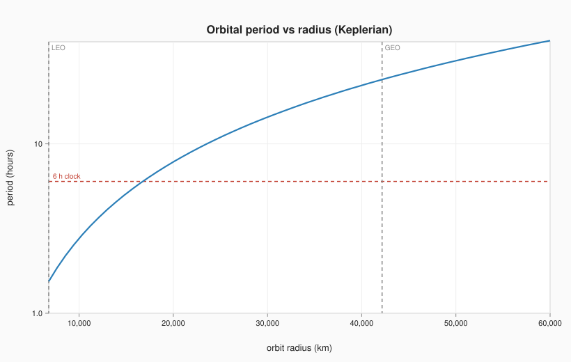
The phasing time-floor scales with orbit Phasing can't beat one orbital period. Where the curve rises above the 6 h clock (past ~MEO), short-clock phasing rescue is impossible — at NRHO the period is ~6.5 days (off-chart).
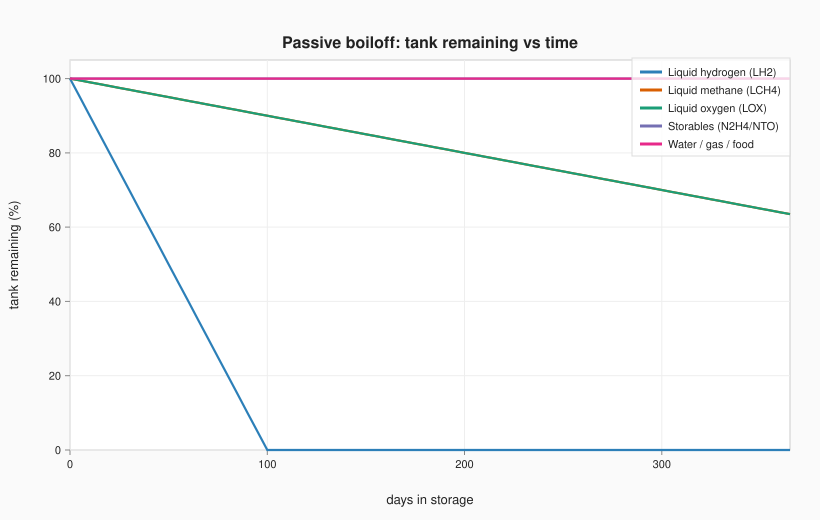
Passive storage: what survives in a dormant cache Tank remaining over a year. Hydrogen is gone in ~100 days; storables, water, and gas are effectively permanent — which is why a fire-and-forget cache holds those.
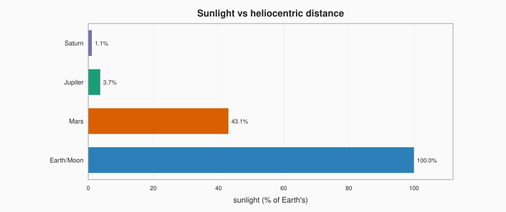
Solar power falls off as 1/r² Sunlight as a percent of Earth's. Past the asteroid belt, active cooling (and just staying alive) means nuclear, not solar.
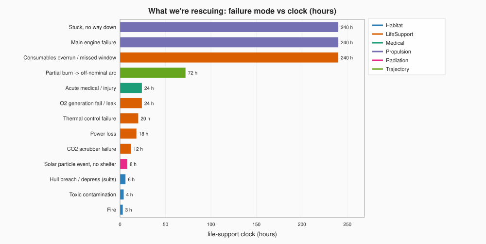
Failure modes by life-support clock Each emergency's time-to-loss-of-crew, by category. The short-clock modes (fire, depress, radiation) drive the need for close/formation responders; long-clock ones tolerate slow recovery rigs.
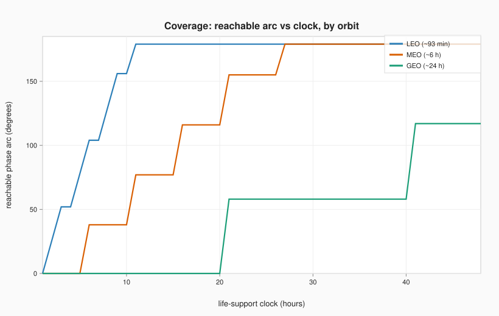
Where coverage is strong vs weak Reachable co-orbital arc vs clock, by orbit. LEO covers the whole ring in hours; GEO covers nothing until the clock exceeds ~a day. The staircase is period-quantization.
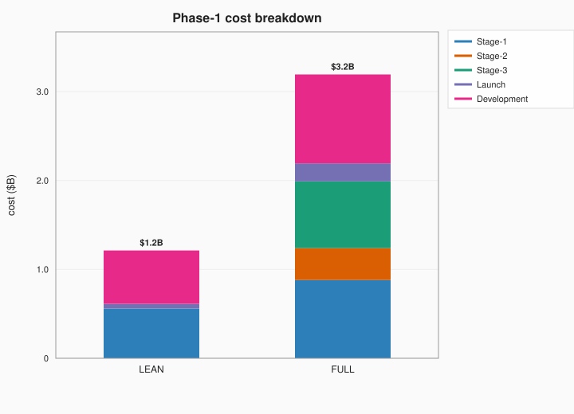
Phase-1 program cost (ISS + Tiangong) Order-of-magnitude cost for the two currently-crewed stations. Lean ≈ $1B (formation refuges only); Full ≈ $3B (echeloned network). Dominated by stage-1 units and development.
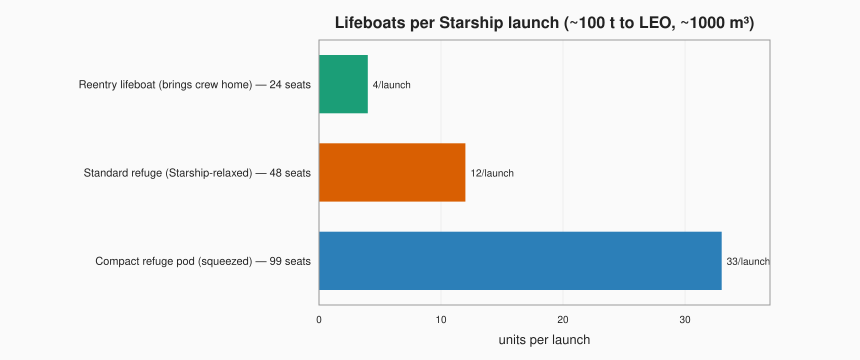
Lifeboats per Starship launch Recovery vehicles per Starship (~100 t, ~1000 m³). Refuges and reentry vehicles are mass-limited. One Starship of reentry lifeboats (~24 seats) exceeds the entire current in-orbit population (10).
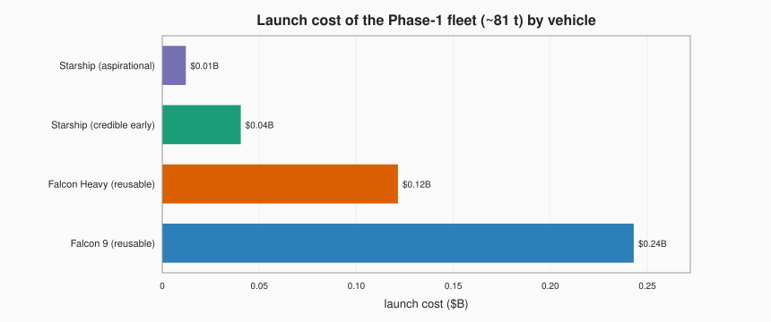
Launch cost of the fleet by vehicle Launch cost of the Phase-1 fleet (~81 t) by vehicle. Starship cuts the launch line to near-noise and carries the whole fleet in 1–2 flights vs ~5 on Falcon 9.